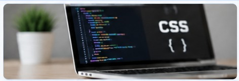

اسم الطالب: بدر ياسر محمد فوزي
الرقم الجامعي: 2500171
تعتبر لغة CSS من اللغات المهمة في تصميم صفحات الويب، حيث تستخدم لتنسيق صفحات الإنترنت وتحسين شكلها ومظهرها.
CSS هي لغة تستخدم للتحكم في تصميم صفحات الويب، مثل الألوان والخطوط والأحجام وترتيب العناصر داخل الصفحة. وتعمل مع لغة HTML لإنشاء صفحات ويب منظمة وجذابة.

| HTML | CSS |
|---|---|
| تستخدم لبناء محتوى الصفحة. | تستخدم لتنسيق شكل الصفحة. |
| تضيف النصوص والصور والعناوين. | تتحكم في الألوان والخطوط والتصميم. |
في النهاية، تعتبر CSS من الأدوات الأساسية في تصميم مواقع الإنترنت، لأنها تساعد على تحسين شكل الصفحات وجعلها أكثر سهولة وجاذبية للمستخدم.